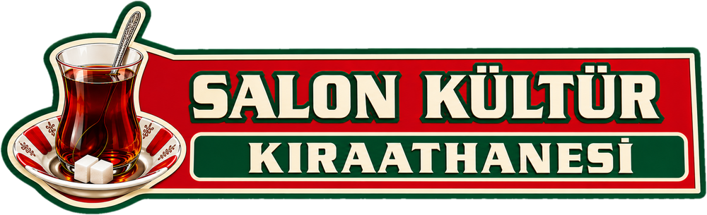

Salon Kültür, kıraathane sohbetlerinden ilham alan absürt esprilerle hazırlanmış kurgusal bir eğlence uygulamasıdır. Buradaki sözler gerçeği yansıtmaz, kıraathane müdavimlerini ya da herhangi bir kişi, grup veya kesimi hedef almaz, kimseyle alay etmeyi amaçlamaz. Sağlık, borsa ve kripto başta olmak üzere hiçbir konudaki söz tavsiye niteliği taşımaz. Uygulama; iddia, bahis ve kumara özendirme amacı taşımaz.